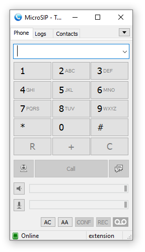
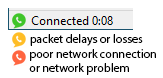
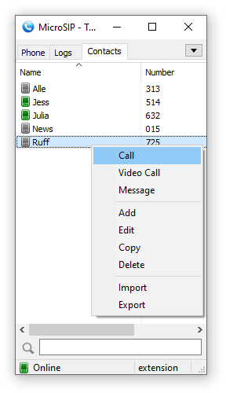
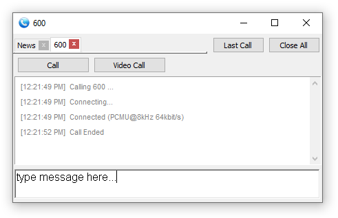
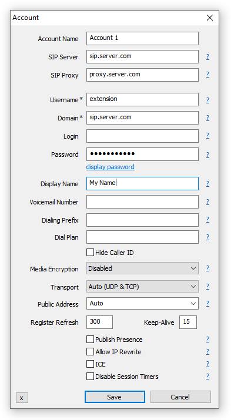
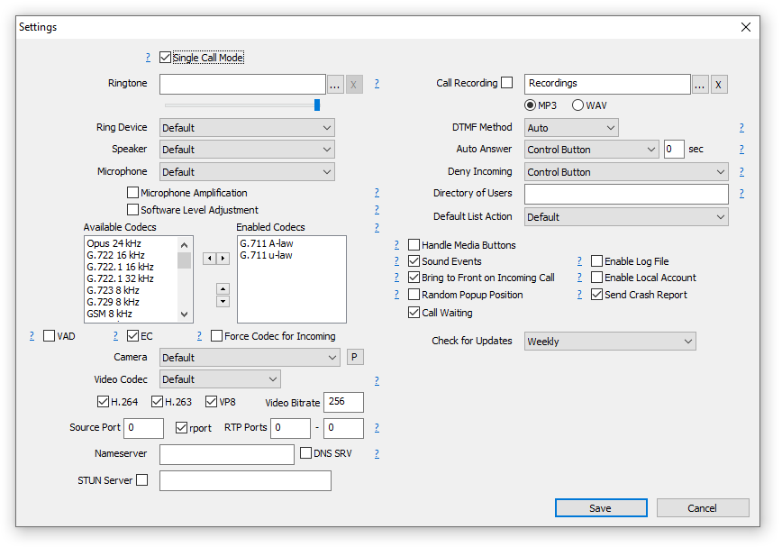
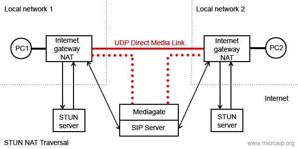

General
Softphone Modes
-
Single Call Mode – A single-window interface with basic call functionality. Enabled by default.
-
Call Manager – A two-window interface that supports multiple simultaneous calls, conference calls, and attended transfers.
Communication Types
-
Calls via a SIP Server or PBX – Select Add Account after installation to configure a SIP account.
-
Direct Calls by IP Address or Domain Name – Available immediately using the Local Account. No additional configuration is required.
When MicroSIP starts automatically with Windows or when the main window is closed, it is minimized to the system tray.
MicroSIP does not require any additional libraries, runtimes, or frameworks to be installed.
Dialpad

Mainly used for dialing numbers and sending DTMF tones. Various input formats are supported.
Examples:
For advanced call scenarios, a complete SIP URI with optional MicroSIP extensions can be entered:
"Name" <sip:[email protected];parameter1=xxx?Custom-Header1=yyy>,dtmf_sequence
Any URI parameters are preserved in the SIP To header URI. Custom headers specified after the question mark (?) are added to the outgoing SIP INVITE request. Multiple custom headers may be specified. The optional DTMF sequence specified after the comma is sent automatically after the call is connected.
A call quality indicator shows the current connection quality:

Control Switches and Buttons
-
DND (switch) — Enables Do Not Disturb mode.
-
FWD (switch) — Enables automatic forwarding of incoming calls. Configure call forwarding in Settings.
-
AC (switch) — Automatically adds incoming calls to a conference after answering a call.
-
AA (switch) — Enables automatic answering. Configure auto answer in Settings.
-
CONF (button) — Invites a participant to the current conference call.
-
REC (button) — Starts or stops recording of the current call. Configure call recording in Settings.
Contacts

To add a contact, right-click an empty area on the Contacts page and select Add Contact.
Only the Number field is required. The number must be unique within the contact list. It can be specified in various formats; see the examples in the Dialpad section.
You can enable Presence Subscription to monitor contact availability, use BLF (Busy Lamp Field) functionality, and perform call pickup. Additional configuration of your SIP server or PBX may be required.
For some types of servers (excluding Asterisk), you must enable Publish Presence in the Account window to share your availability status with other contacts.
After presence is configured successfully, contact entries will be displayed in different colors according to their status.
When a contact receives an incoming call, its icon starts blinking. To answer the incoming call (directed call pickup), double-click the contact or select Call Pickup from the context menu.
The default call pickup prefix is "**". You can change it in the softphone settings; see Feature Codes.
Call pickup is available only if your PBX is configured to support this feature. For example, to enable directed call pickup in Asterisk, add the following line to extensions.conf:
exten => _**.,1,Pickup(${EXTEN:2})
Call Manager

The Call Manager provides advanced call handling features, including multiple simultaneous calls, conference calls, blind and attended transfers, and instant messaging.
The window uses a tab-based interface. Each tab represents a phone number and may contain an active call, a completed call, a message session, or a combination of these. New calls and messages are automatically assigned to their corresponding tabs.
When switching between tabs, the previously active call is automatically placed on hold and the selected call becomes active. This allows you to manage multiple calls without manually holding and resuming them.
The toolbar provides quick access to the most common actions, including making audio and video calls, placing calls on hold, and ending calls.
The conference menu contains commands for creating and managing conference calls. Only one conference call involving multiple participants can exist at a time.
The transfer menu provides commands for both blind transfers and attended transfers.
The Call Manager also supports sending and receiving instant messages. Messages are displayed within the corresponding tab together with call-related information.
Each tab maintains an activity log that records events associated with the phone number, such as outgoing and incoming calls, call termination, transfers, and other operations.
The Last Call button switches between the most recently used tabs that contain active calls or calls that have recently ended, allowing you to quickly return to the previous conversation.
Closing a tab terminates any active call associated with that tab. Closing the Call Manager window terminates all active calls.
Account

MicroSIP supports two types of accounts: SIP accounts and the Local Account.
SIP Account
A SIP account is the primary and most commonly used account type. It registers with a SIP server or PBX and allows you to make and receive calls through that server.
To configure a SIP account, you must obtain the account details from your VoIP service provider, SIP provider, or PBX administrator. Typical account information includes the SIP server address, user name or extension number, password, and other connection parameters.
MicroSIP can be used with third-party VoIP providers, hosted PBX services, IP-PBX systems, and private SIP servers. If your organization operates its own PBX, request the account settings from your system administrator.
You can create multiple SIP accounts and switch between them as needed. Only one SIP account can be active at a time. To create a new SIP account, select Add Account from the main menu.
Local Account
The Local Account allows direct calls between endpoints without registering with a SIP server. Instead of dialing a phone number or extension, enter the IP address or domain name of the remote endpoint. Optionally, a user name can be specified.
The Local Account is disabled by default. After enabling it in the softphone settings, the Local Account item becomes available in the main menu, allowing you to edit its settings.
Most settings available for SIP accounts are also available for the Local Account. The main difference is that no registration server is used.
Once enabled, the Local Account is ready to use without additional configuration. However, its settings can be customized if required.
Only one Local Account can exist.
Account Settings
The following settings are available for SIP accounts and the Local Account unless stated otherwise.
- SIP server
Your account SIP
server.
- SIP proxy
Your account SIP
proxy or a chain of proxies. Examples: 192.168.1.1, 192.168.1.1:5070, 192.168.1.1 192.168.15.1,
192.168.1.1;hide, ";hide" parameter can solve impossibility of
registration or calls due to server configuration.
- Username
Your account
username.
- Domain
Your account domain.
- Login
Username for
authentication. If empty, will be used Username.
- Password
Your account
password.
- Display name
Your name, remote
party will see it in incoming calls and messages.
- Dialing Prefix
International
calling prefix for numbers in local format (must begin with "+" or "00");
or a simple prefix for each dialing phone number.
- Dial Plan
Transforms dialing number according to pattern. Numbers that do not match any patterns are blocked. Patterns are separated by a pipe symbol: |. The entire value can be enclosed in brackets ().
| x |
"x" represents any character |
| [sequence] |
Enter characters within square brackets to create a list of accepted digits.
Numeric range: enter [2-9] to allow the user to enter any one digit from 2 through 9.
Numeric range with other characters: enter [16-9*] to allow the user to enter 1, 6, 7, 8, 9, or *.
|
| <dialed:substituted> |
Replaces one sequence with another. Or inserts some sequence inside a number: <:substituted>
Example 1 : <8:1555>xxxxxxx
If user dials 81234567, the system transmits 15551234567.
Example 2 : <:1>xxxxxxxxxx
If user dials 1234567890, the system transmits 11234567890.
|
| . (period symbol) |
Represents zero or more entries of the previous digit. Example, 01. => 0, 01, 011, 0111, ...; x. => matches any dialed number. |
Example: Replace + with 00, allow any other numbers.
<+:00>x.|x.
Complex rule example:
[3469]11|0|00|1[2-9]xx[2-9]xxxxxx|<:1>[2-9]xx[2-9]xxxxxx|<:1618>[2-9]xxxxxx|<:1618555>6[2-4]xx
|
- Hide Caller ID
Your PBX must allow this feature. Otherwise, this feature will not work or you will not be able to make an outgoing call. There are two anonymization methods to choose from.
- Voicemail Number
Voicemail
access number. If empty, microsip will try to determine it
automatically.
- Media encryption (remark 1)
- Disabled - never use encryption
- Optional SRTP - use optional SRTP encryption using RTP/AVP
- Mandatory SRTP - use SRTP encryption using RTP/SAVP
- DTLS-SRTP/SRTP - use DTLS-SRTP encryption, if not supported then use SRTP (RTP/SAVP)
- DTLS-SRTP - use DTLS-SRTP encryption
All of the above encryption methods provide media protection between the softphone and the PBX (remote side of the connection).
To prevent audio/video traffic from being decrypted, secure TLS transport must be used with SRTP. When using DTLS-SRTP to protect against wiretapping, any transport protocol can be used securely.
Please note that the PBX itself has access to the transmitted data.
- Transport
The value depends on the configuration of your SIP server. Failsafe value: UDP. Best value: TLS. TCP is good, but is may not work with your router/NAT due to SIP ALG enabled.
"UDP+TCP" is a mix of UDP (for small request) and TCP (for large).
- Public address
Can be used to solve call flow and media delivery issues. You can manually specify IP address or hostname for Via, Contact and SDP.
It can point to one of the interface address OR it can point to the public
address of a NAT router where port mappings have been configured. Often this option should also be used when connecting via a VPN, you need select the IP address of that connection.
For automatic public address detection and rewrite you can use Allow IP rewrite
feature or use STUN server.
- Local port
By default
MicroSIP tries to listen on standard SIP port - 5060. If port is busy
by other application, MicroSIP will listen on random port. You can
manualy change port to any.
- Publish presence
Sends
on SIP server publish query, it means that other subscribed contacts
can see your status and can pickup your incoming calls (BLF
functionality). Besides, often you must specify which contacts have
right to see your presence information - you can done this for
example via SIP provider webpage. Your SIP server must support this
feature.
- ICE (remark
1)
Helps to find shortest way for media streams and reduce media latency. It is
usefull when possible direct P2P connection without SIP provider
mediagate. Enabling ICE can cause problems with in media delivery if SIP server configured incorrecly.
- Allow IP rewrite
Can be used to solve call flow and media delivery issues when you don't have dedicated public IP address. If enabled, MicroSIP will keep track of the public IP address
from the response of REGISTER request. Public IP will be used in
later SIP queries in Via, Contact and SDP.
See also: Public address, STUN.
- Disable Session Timers
Specify
the usage of Session Timers. Try to disable Session Timers if your
calls dropps after XX minutes. Recommended value: unchecked.
Settings

- Single call mode
Provides a simple user interface with limited functionality. You must disable this if you wish to manage multiple calls, make attended transfers or conference calls.
- Ringtone
You can
choose any WAV file on incoming call.
- Microphone Amplification
Extends range of input signal level regulation by adding software amplification on top half of regulator. Default value - no.
- Software Level Adjustment
Enables internal input level regulation instead of changing global level of input device. Note that hardware regulation has lower noise rating. Default value - no.
- Audio Codecs (remark 1)
You can enable and
disable codecs by moving it between lists. Also you can set codec
priority (for outgoing calls) by moving codecs in right list.
- VAD
Enables voice activity detection. Default value - no.
- EC
Enable echo cancellation.
Default value - no.
- Force codec for incoming
Normally, caller defines codecs priority. For incoming calls this
option allows you (callee) select prefered codec.
- Disable H.264 codec
Normally caller defines codec that will be used by both parties. But
some callees parties forces your selected codec with some other, but
in same time they supports your codec. In this case you can disable
unwanted codec. Default value - no.
- Disable H.263 codec
See
above. Default value - no.
- Video codec bitrate
Set the
maximum bitrate. If one party set 256 kbit/s and other 512 kbit/s -
will be used 256 kbit/s for both. Dynamic scenes requires higher
bitrates (~512 kbit/s), otherwise picture quality will fall down.
- DTMF Method
Auto: MicroSIP
will use RFC2833 for DTMF relay by default but will switch to in-band
audio DTMF tones if the remote side does not indicate support of
RFC2833 in SDP. Note: in-band method will not work properly with
every audio codec due to compression algorithms.
- Auto Answer
MicroSIP will
play short tone and popup when call auto accepted. SIP header - when
receiving the "Call-Info: Auto Answer" or "Call-Info: answer-after=0"
or "X-AUTOANSWER: TRUE" in SIP header. Options:
Delay - delay before auto answer.
Caller Number - one or more numbers separated with ; or | and with wildcards allowed * ? ^ (^ indicates an optional character).
- Call Forwarding
Automatic forwarding of incoming calls.
- Feature Codes
Call transfer using a feature code instead of the standard SIP call transfer. You can also make an attended call transfer in single call mode with it. Your PBX must be configured to use this feature.
- Deny incoming
Helps to
block unwanted or spam incoming calls. Different
user/domain/user-domain means that callee data do not match data in
your account window. Different remote domain means that caller domain
do not match domain in your account window.
- Directory of users
Enter URL to obtain contacts from external source via HTTP(s). JSON and XML responses are supported. Use UTF-8 encoding.
JSON format (recommended):
Test URL: https://www.microsip.org/contacts-sample.json
{"refresh": 0, "silent": 0, "items": [
{"number": "", "name": "", "firstname": "", "lastname": "", "phone": "", "mobile": "", "email": "", "address": "", "city": "", "state": "", "zip": "", "comment": "", "presence": 0, "starred": 0, "info": ""}
]}
The incremental GET parameter "sequence" is automatically added to the URL.
If you do not use standard SIP presence, the JSON response may include presence data or carry only presence data:
{"refresh": 3,
"presence": [
{"number": "001", "status": "online", "info": "Online"},{"number": "002", "status": "offline", "info": "Offline"},{"number": "003", "status": "away", "info": "Away"},{"number": "004", "status": "busy", "info": "Busy"},{"number": "005", "status": "ring", "info": "Ring"},{"number": "006", "status": "phone", "info": "On the phone"}]
}
XML format:
Test URL: https://www.microsip.org/contacts-sample.xml
<?xml version="1.0"?>
<contacts refresh="0" silent="0">
<contact name="" number="" firstname="" lastname="" phone="" mobile="" email="" address="" city="" state="" zip="" comment="" presence="0" starred="0" info=""/>
</contacts>
Also
supported Cisco IP phone directory format CiscoIPPhoneDirectory, Yealink and some other - just try yours.
Parameters:
- "refresh" - Controls how often the user directory is updated. Value in seconds. If zero or not set, subsequent update requests will not be executed.
- "silent" - Disable display of user directory subsequent update errors.
In case of failure of the initial loading of the user directory, attempts will be made again with increasing time intervals.
- STUN server
Helps to make
direct way for media streams without SIP provider media gate when NAT
used. It open UDP ports on NAT server for incoming connections.
Exists different NAT types (full cone NAT, (address) restricted cone
NAT, port restricted cone NAT and symmetric NAT). You can use STUN
only if your NAT is not symmetric! Otherwise you will have problems -
you can not hear and can not hears you - remove it from settings.
Default value - empty.

- Handle Media Buttons
Enables handling of media keys or buttons events on multimedia keyboards or headsets with buttons (WM_APPCOMMAND message). Can be used for call answer, hold, resume and end call.
- Headset Support
Enables HID-compatible headset button event processing and LED indication. Can be used to answer, hold, resume, and end a call by pressing a button on a USB or Bluetooth headset (Jabra, Plantronics, etc). You should not install headset manufacturer software as it may interfere with the standard headset interface.
- Sound events
Playback key
presses and signals of outgoing call.
- Enable local account
Local
account allows you make and receive calls without SIP server and SIP
account. In this case you can call by IP address (or domain name) as
number.
Note: local account always enabled if SIP account is not
configured or disabled.
Example: sip:192.168.1.21 or just
192.168.1.21 or [email protected].
- Enable log file
Activates microsip
log file. Used for debugging. To open log file right click on tray
icon.
- Random position of the answer box
Display incoming call window at random position on the screen and
random monitor if many.
- Send crash report
Automatically sends a crash report to the microsip team for analysis. The report includes the app crash dump file,
OS name and version, and the microsip log file (if enabled in the settings). It never
contains your passwords and is used only to fix bugs found in the app.
Settings not included in Settings dialog
You need to modify microsip.ini manually.
- "cmdCallStart" - runs specified command when connection
established. Caller ID passed as parameter.
- "cmdCallEnd" - runs specified command when call ended. Caller ID
passed as parameter.
- "cmdIncomingCall" - runs specified command when incoming call
arrives. Caller ID passed as parameter.
- "cmdCallAnswer" - runs specified command when user answers on
incoming call. Caller ID passed as parameter.
- "autoHangUpTime" - automatically end a call after a specified number of seconds.
- "maxConcurrentCalls" - reject incoming calls if limit reached.
- "noResize" - prevent resizing of the main window.
- "userAgent" - use a custom User-Agent value of outgoing SIP
requests.
- "multiMonitor" - allow multiple monitor mode.
Port knocker feature. Send sequential UDP requests to a specified ports
on a specific host (SIP server by default) before microsip tries the
SIP registration. That allows SIP server to whitelist cliend IP in the
firewall.
- "portKnockerHost=host.com" - domain name or IP address of knocking
host. If empty and port list isn't empty - SIP server value will be
used.
- "portKnockerPorts=1111,2222" - one or more ports separated by
comma. If empty - feature disabled.
Shortcuts
- Type
Determines the action that will occur when the button is pressed. Combined buttons can perform two actions, the second action will be called if there is an active call.
- Toggle
Shortcut button becomes toggle. When turning on, the first number is called, when turning off, the second.
- BLF
Enable subscription and presence indicator, as it implemented for contacts.
DTMF
While you are in call you can press buttons on dialpad to send DTMF
signals. If you want automatically pass DTMF commands just after call
established, then add ",dtmf_sequence" or ",dtmf_sequence1,dtmf_sequence2" in calling number. One comma means pause in one second.
Video
Supported H.264 and H.263+ (other name H.263-1998) video codecs.
Default codec - H.264, video format - 640x480 @ 30 fps, outgoing
bitrate 512 kbit/s. H.264 encoding requires significant CPU resourse.
Recommended dual core processor, multimedia extensions like MMX will be
used if is present.
Video capture and video rendering uses
DirectX and Direct3D (with hardware acceleration).
Because
hardware acceleration is used, video calls will not work with remote
desktop session (RDP).
If you have serious problems with
performance:
- update video adapter drivers
-
install/reinstall DirectX
Command line
Call a number: microsip.exe number
Hang up all calls: microsip.exe /hangupall
Hang up all incoming: microsip.exe /hangupincoming
Hang up all calling: microsip.exe /hangupcalling
Answer a call: microsip.exe /answer
Call transfer: microsip.exe /transfer:XXX
Send DTMF: microsip.exe /dtmf:12345
Start minimized: microsip.exe /minimized
Reset configuration and delete all data: microsip.exe /reset
Reset configuration and delete all data (without confirmation): microsip.exe /resetnoask
Exit: microsip.exe /exit
Hotkeys
The phone's main window must be active.
F2 - answer a call
F4 - terminate all calls
Remarks
- Remark 1
This
feature increases an UDP packet size (SDP message length of INVITE
query). If UDP packet size will be > 1500 bytes (MTU), it will be
fragmented. Not all routers can correctly work with fragmented UDP
packets. So, if you enable extra feature like SRTP, or ICE, or select
too many enabled codecs, or make video call, be ready that you will
not be able make a call. Possible solutions: use a TCP or TLS transport,
but in this case your SIP server must support it. Please note that TCP may not work with SIP ALG enabled on your router.